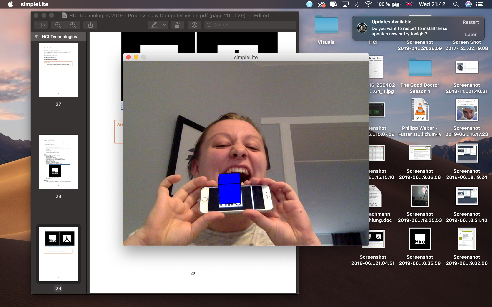

Write a program that draws three (or more) ellipses:
Write a program that draws:
Write a program that draws at least two different shapes, with various colors and make them interactive.
Ideas:
Now it's time to start experimenting. Take a good look at the LiveCamTest code you just opened.
Can you discover which line causes a rectangle to be drawn around a recognized face? (Tip: rect = rectangle).
Adjust the code so that a circle is drawn instead of a rectangle.
People always tell me I have a very round face! Well, I guess they were right.
Adjust the code so that every recognised face gets an 'anonymous' black bar in front of his eyes or a red clown nose instead of his/her nose.
Being a Processing clown is pretty creepy as well :/
Adjust the code so that every recognised image is enhanced by an image, e.g. give a recognized face funny glasses or a hat.
I always wanted to have a hat like this!
Adjust the code of one of the examples so that something cool happens.
The lighbulb always appears above the brightest spot, so you know where the light is coming from ;)
I had real trouble finishing this assignment. I tried to add a marker into the existing code on the position the screenshot shows, but processing kept crashing because of it. I also added a picture into the folder where the other markers were located in various different formats, but ptocessing kept crashing each time i ran the code. Afterwards I located the files of the workinf markers in hopes to find out what format they are in, but all I got out of it was Format: Document. At that point, I decided to try one more thing. I thought that maybe processing was crashing because it had a limit of 2 markers at the same time, so I commented out one of the original markers and left there the one I created. Nothing worked, so I googled in hopes to get some help, but I did not find anything. I also asked around in our class-Whatsapp group, but there was nobody who could help me. That is how "Mission: add your own marker" ended.
... so at least I decided to take pictures with the existing AR creations. They did not work on my phone, but it worked on an iPhone 6. Yaaaay!
